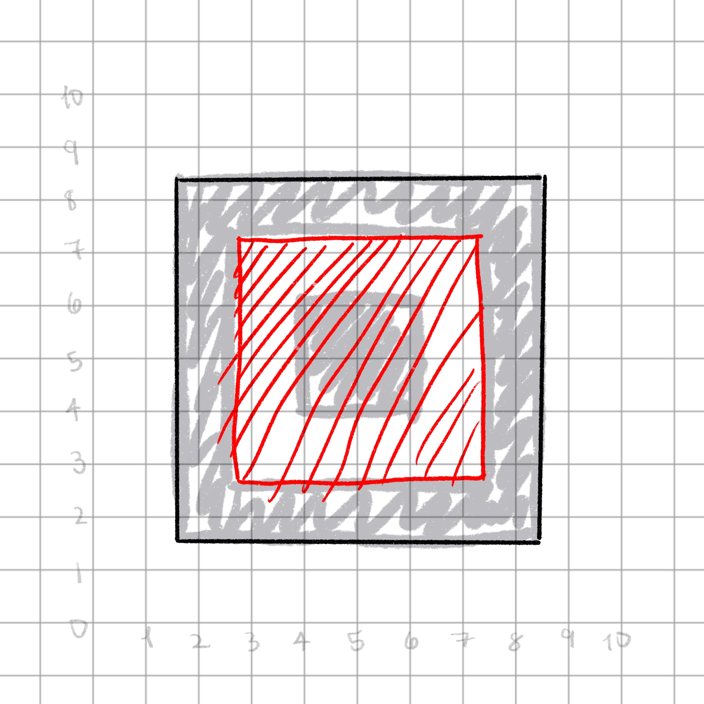
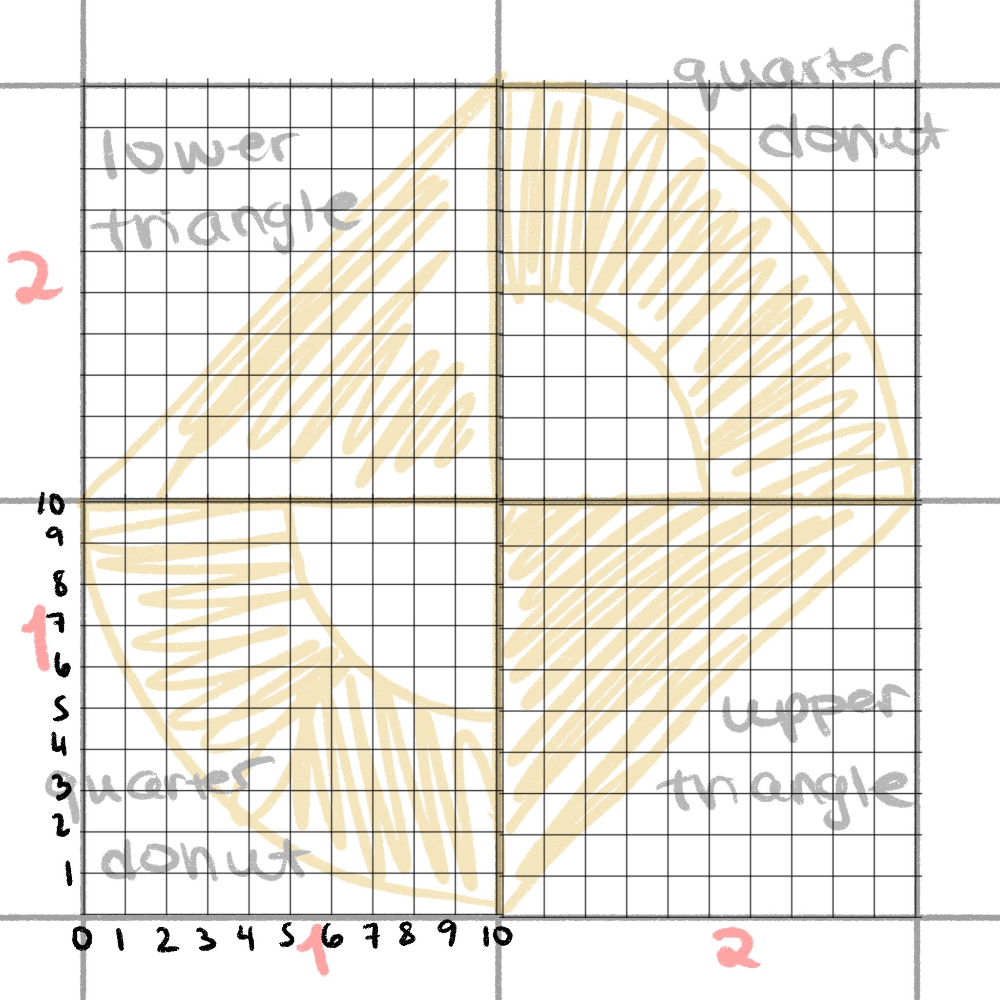

07:00
Steal like an Rtist: Creative Coding in R
Riso Grids
Ryan Miglinczy
Layer 1

Layer 2

Using the shape types below, sketch two different 2x2 layers that could be combined to make a riso print
Oreo square


Oreo square

Oreo square

Oreo square

Oreo square
# A tibble: 12 × 4
x y subgroup group
<dbl> <dbl> <dbl> <dbl>
1 1.5 1.5 1 1
2 8.5 1.5 1 1
3 8.5 8.5 1 1
4 1.5 8.5 1 1
5 2.75 2.75 2 1
6 7.25 2.75 2 1
7 7.25 7.25 2 1
8 2.75 7.25 2 1
9 4 4 NA 2
10 6 4 NA 2
11 6 6 NA 2
12 4 6 NA 2
Oreo square
Oreo square
Upper triangle

Making parts of circles
Another brief math interlude…

Making parts of circles
Another brief math interlude…

Making parts of circles
Another brief math interlude…

Making parts of circles
Another brief math interlude…

Making parts of circles
Another brief math interlude…

Making parts of circles
Another brief math interlude…

Making parts of circles
Another brief math interlude…
geom_arc_bar is used to make parts of circles
x0,y0: center of circler: radius of circlestart: starting angleend: ending angle
Making parts of circles

Quarter donut, quadrant 2

Quarter donut, quadrant 3
- Open the file file
exercises/02-riso-grids/exercise-1.Rmd - Determine the
x,y,start, andendof the bottom left circle, pictured here - Plot it using
geom_arc_bar()
05:00

Quarter donut, quadrant 4

Shape plotter
mapping: x = ~x, y = ~y, group = ~group, subgroup = ~subgroup, fill = ~color
geom_polygon: na.rm = FALSE, rule = evenodd
stat_identity: na.rm = FALSE
position_identity Returns only the geom_*() function, which can be used directly in a ggplot2 pipeline, or with multiple together in a list()

List of plotters
library(purrr)
layer_1_plotting <- layer_1 %>%
split(.$id) %>%
map(function(data) {
generate_shape_data(data[["shape"]], data[["color"]])
}) %>%
map(function(data) {
data %>%
generate_shape_plotter()
})
layer_1_plotting$`1`
mapping: x0 = ~x, y0 = ~y, r = ~r, r0 = ~r0, start = ~start, end = ~end, fill = ~color
geom_arc_bar: expand = 0, radius = 0
stat_arc_bar: na.rm = FALSE, n = 360
position_identity
$`2`
mapping: x = ~x, y = ~y, group = ~group, subgroup = ~subgroup, fill = ~color
geom_polygon: na.rm = FALSE, rule = evenodd
stat_identity: na.rm = FALSE
position_identity
$`3`
mapping: x0 = ~x, y0 = ~y, r = ~r, r0 = ~r0, start = ~start, end = ~end, fill = ~color
geom_arc_bar: expand = 0, radius = 0
stat_arc_bar: na.rm = FALSE, n = 360
position_identity
$`4`
mapping: x = ~x, y = ~y, group = ~group, subgroup = ~subgroup, fill = ~color
geom_polygon: na.rm = FALSE, rule = evenodd
stat_identity: na.rm = FALSE
position_identity 
Using a list of plotters together
???


Shifting data


Shifting data

Do the same for the second layer!
layer_2 <- tribble(
~row, ~column, ~shape,
1, 1, "oreo square",
1, 2, "quarter donut q2",
2, 2, "oreo square",
2, 1, "quarter donut q4"
) %>%
mutate(
color = grey,
id = row_number()
)
layer_2_plotting <- layer_2 %>%
split(.$id) %>%
map_dfr(
function(data) {
generate_shape_data(data[["shape"]], data[["color"]])
},
.id = "id"
) %>%
mutate(id = as.numeric(id)) %>%
left_join(layer_2, by = c("id", "color", "shape")) %>%
mutate(
x = x + column * grid_size,
y = y + row * grid_size
) %>%
split(.$id) %>%
map(function(data) {
generate_shape_plotter(data)
})
ggplot() +
layer_2_plotting +
scale_fill_identity() +
coord_fixed() +
theme_void()